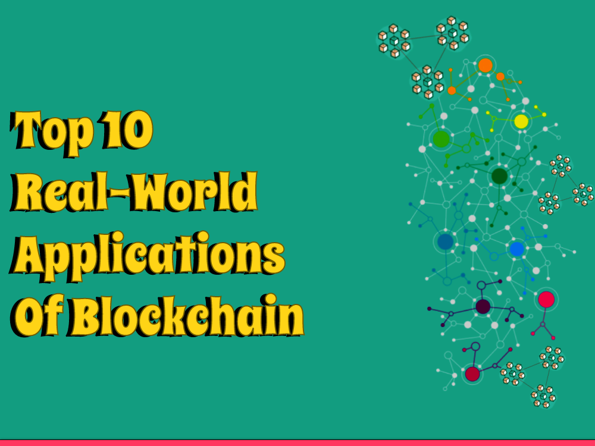

Blockchain innovation is changing enterprises and organizations from one side of the planet to the other. Its decentralized nature, straightforwardness, and permanence give an elevated degree of safety and productivity in different regions. Blockchain isn't simply restricted to digital currencies, however it is additionally utilized for a few genuine applications. In this blog, we will talk about the main 10 true uses of blockchain innovation.
Supply Chain Management
Blockchain innovation offers a straightforward and changeless store network the board framework that permits the following of items from the source to the objective. With blockchain, store network the executives turns out to be more productive and secure. It decreases the gamble of misrepresentation, fake items, and untrustworthy practices.
Healthcare
Blockchain innovation can change the medical services industry by empowering secure and straightforward sharing of clinical information between medical care suppliers and patients. It gives an elevated degree of information security, protection, and interoperability. Blockchain innovation can likewise be utilized to make a more effective medical services framework by dispensing with the requirement for go-betweens and diminishing expenses.
Identity Management
Blockchain innovation can give a safe and decentralized personality the board framework that takes out the requirement for middle people. It permits people to have command over their own information and gives an elevated degree of safety and protection. Blockchain-based personality the executives frameworks can be utilized for casting a ballot, banking, medical care, and different regions where character confirmation is fundamental.
Digital Casting a ballot Systems
Blockchain innovation can reform the democratic framework by making a straightforward and changeless democratic framework that guarantees the trustworthiness of the democratic cycle. With blockchain, it turns out to be inordinately difficult to control the aftereffects of a political decision. Blockchain-based casting a ballot frameworks can be utilized for public races, executive gatherings, and other democratic cycles.
Intellectual Property Management
Blockchain innovation can change the protected innovation the board framework by giving a safe and straightforward stage for the enlistment and insurance of licenses, brand names, and copyrights. It permits makers to have command over their licensed innovation and decreases the gamble of encroachment and robbery.
Energy Trading
Blockchain innovation can be utilized for energy exchanging by making a decentralized stage that empowers the exchanging of energy credits among makers and buyers. It can diminish the requirement for go-betweens and give a more productive and secure energy exchanging framework.
Real Estate
Blockchain innovation can change the land business by making a solid and straightforward stage for the trading of properties. It takes into consideration the computerization of property moves and diminishes the requirement for delegates. Blockchain-based land stages can give an elevated degree of safety, straightforwardness, and productivity.
Gaming
Blockchain innovation can be utilized for the gaming business by making a decentralized stage for in-game exchanges and resource possession. It permits players to possess their in-game resources and gives a solid and straightforward stage for exchanging them.
Charity and Donations
Blockchain innovation can change the cause and gifts framework by making a straightforward and permanent stage for gifts. It permits contributors to follow their gifts and guarantees that the gifts arrive at the expected beneficiaries. Blockchain-based cause stages can diminish the gamble of misrepresentation and increment straightforwardness.
Government Services
Blockchain innovation can change the taxpayer driven organizations by giving a protected and straightforward stage for the conveyance of taxpayer driven organizations. It very well may be utilized for personality confirmation, casting a ballot, tax collection, and different regions where straightforwardness and security are fundamental.
All in all, blockchain innovation has many applications in different enterprises and organizations. Its decentralized nature, straightforwardness, and changelessness give an elevated degree of safety and productivity in various regions. The main 10 genuine uses of blockchain innovation we examined in this blog are only a couple of instances of how blockchain can change enterprises and organizations.